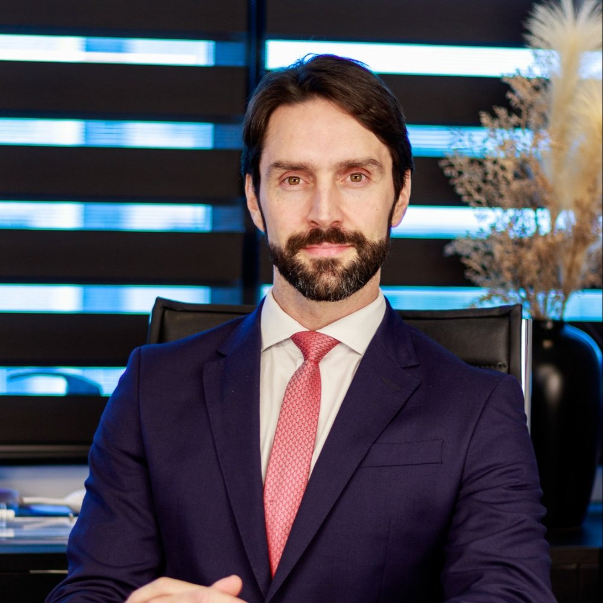
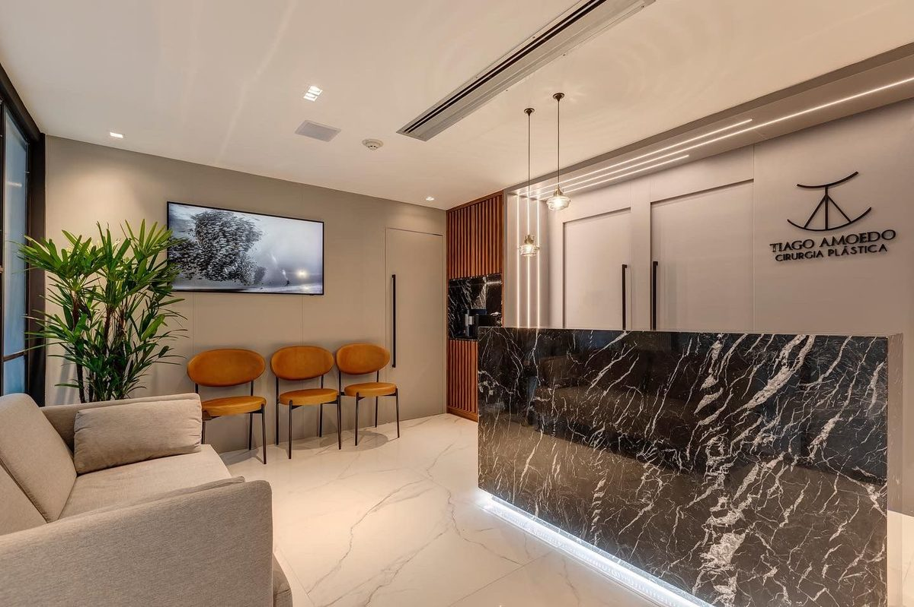
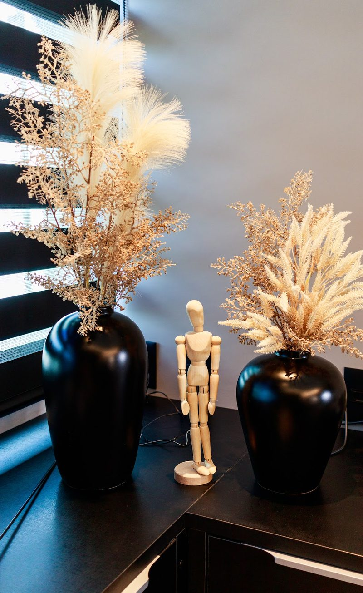
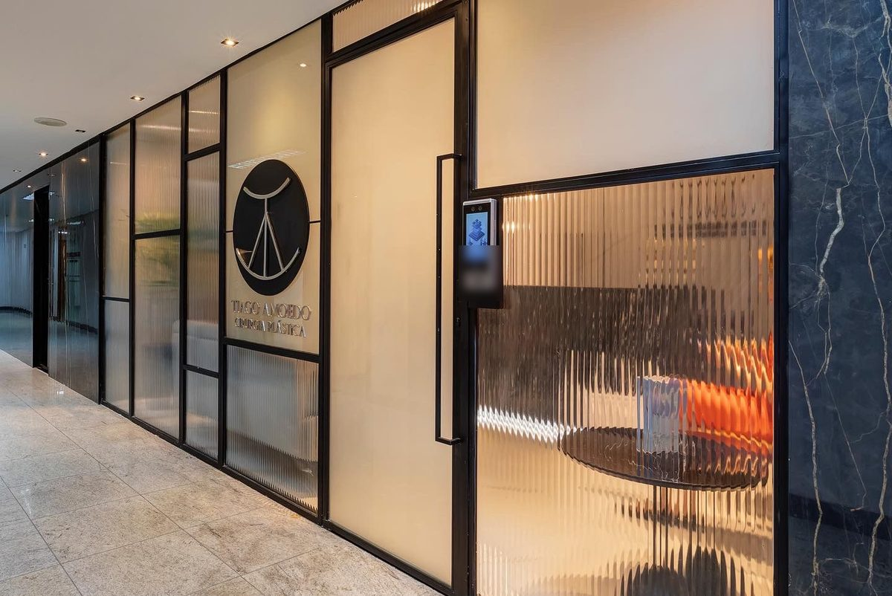
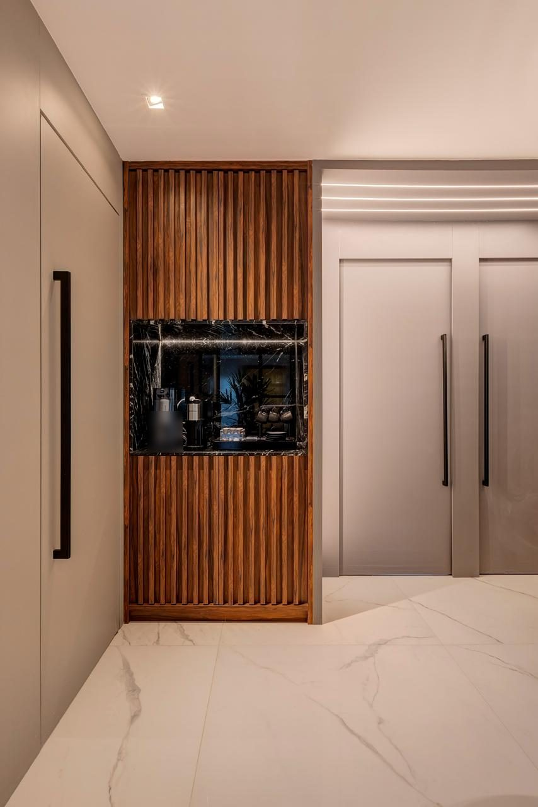

CRM-BA 18908 · RQE 11832 · Membro Especialista da SBCP
Dr. Tiago AmoedoCirurgião plástico em Salvador
“A cirurgia não começa no centro cirúrgico. Começa na primeira consulta.”Do meu canal no YouTube · ver o vídeo
Sou cirurgião plástico em Salvador, com vínculo no Hospital da Bahia desde 2013. Faço cirurgias de contorno corporal, mamas e face, e cirurgias depois do emagrecimento e da gestação — sempre com avaliação, preparo e critério antes de marcar qualquer data.

Por onde começar
O que trouxe você até aqui?
Escolha o assunto e leia com calma antes da consulta. Onde há aspas, o texto é meu, publicado no meu canal, com link. A indicação é sempre individual, definida em consulta.
Quero tratar a gordura localizada ou o abdome
Lipoaspiração, lipoescultura, abdominoplastia e lipoabdominoplastia.
Contorno e lipoaspiraçãoMamasPenso em uma cirurgia das mamas
Prótese de silicone, redução, mastopexia e ginecomastia.
Cirurgia das mamasEmagrecimento e gestaçãoEmagreci ou fui mãe, e sobrou pele
Abdome, braços, coxas e mamas, no momento certo.
Emagrecimento e gestaçãoFaceAlgo na face me incomoda
Pálpebras, lifting, nariz, orelhas, toxina botulínica e preenchimento.
Face e minimamente invasivosAntes de qualquer cirurgia: como funciona o preparo
Antes do centro cirúrgico
A cirurgia começa antes.
“A decisão mais importante de uma cirurgia não acontece no centro cirúrgico. Acontece antes. Na avaliação, no critério de dizer sim ou não.” É o que escrevo no meu canal e o que faço no consultório. Estas são as etapas do preparo, com as frases que publiquei.
- 01Primeira consulta
“A cirurgia não começa no centro cirúrgico. Começa na primeira consulta.”
15 de maio de 2026 · vídeo - 02Avaliação e critério
“A decisão mais importante de uma cirurgia não acontece no centro cirúrgico. Acontece antes. Na avaliação, no critério de dizer sim ou não.”
12 de junho de 2026 · vídeo - 03Estado nutricional
“Resultado cirúrgico começa no estado nutricional do paciente, antes de qualquer incisão.”
22 de maio de 2026 · vídeo - 04Equipe
“Cirurgia plástica não funciona sozinha, nunca funcionou.”
Nutrição, nutrologia, fisioterapia, avaliação cardiológica e pré-anestésica; dermatologia quando necessário.
5 de junho de 2026 · vídeo - 05O momento certo
“Se as condições ideais não estão presentes, esperar é a decisão certa.”
26 de junho de 2026 · vídeo - Centro cirúrgico
Só depois de tudo isso.
“Déficit calórico crônico, baixa proteína, estado nutricional comprometido: o corpo que entra despreparado no centro cirúrgico cobra o preço no pós-operatório. […] É por isso que aqui nenhuma cirurgia começa sem que o paciente esteja no momento certo. Não é exigência, é respeito pelo resultado.”
Do meu canal no YouTube, 29 de maio de 2026 · ver o vídeoConteúdos · do meu canal
As perguntas que eu respondo sem rodeio.
Lipoaspiração e contorno corporal estão no centro do meu trabalho hoje. No canal, respondo às dúvidas que ouço no consultório — inclusive as desconfortáveis, sobre riscos e pós-operatório.
The Bodycast
A cirurgia plástica conversa com outras especialidades.
No meu videocast, recebo convidados de outras áreas para falar do que acontece em volta da cirurgia: nutrição, nutrologia, anestesia, dermatologia, ginecologia, maternidade. Porque, como escrevi no canal, “cirurgia plástica não funciona sozinha, nunca funcionou.”
- Concorrência na cirurgia plásticacom Dra. Jamile Araripe54:02
- Ginecologia x cirurgia plásticacom Dra. Tina Batalha1:47:16
- Nutrologia x cirurgia plásticacom Dr. Rusthenes Jr.1:09:57
- Cirurgia plástica é arte?com Dodô Villar57:12
- Plástica x dermatologiacom Dra. Alice Magalhães1:03:46
- Plástica x nutriçãocom Evelyn Brooke1:25:34
- Plástica x anestesiacom Dr. Italvar Neto50:45
- Plástica x maternidadecom Jessica Smetak48:03
Episódios completos no canal do YouTube.

Trajetória
Da formação em Santos ao consultório na Pituba.
- FormaçãoMedicina, cirurgia geral e cirurgia plástica
Graduação na Escola Bahiana de Medicina e Saúde Pública; cirurgia geral na Santa Casa de Misericórdia de Santos; cirurgia plástica no Serviço de Cirurgia Plástica Dr. Ewaldo Bolivar de Souza Pinto (UNISANTA), em Santos.
Apresentação do meu site antigo · Santa Casa de Santos no CNES - 2012Coautor na Revista Brasileira de Cirurgia Plástica
“Gluteoplastia de aumento: experiência do Serviço de Cirurgia Plástica Dr. Ewaldo Bolivar de Souza Pinto”, na revista oficial da SBCP, quando eu era estagiário do serviço.
RBCP, vol. 27, nº 1 · DOI - Desde 2013Cirurgião plástico no Hospital da Bahia
Vínculo de cirurgião plástico registrado no CNES desde novembro de 2013.
CNES - 2017–2022Hospital Estadual da Mulher
Cirurgião plástico do hospital, segundo o CNES.
CNES - HojeMembro da SBCP
Categoria “Associado (Membro Especialista)” na busca pública da Sociedade Brasileira de Cirurgia Plástica.
SBCP - HojeThe Bodycast e o canal no YouTube
Conversas com outras especialidades e vídeos curtos sobre preparo, segurança e pós-operatório.
canal no YouTube

Técnica e franqueza
“Mas cirurgia plástica eletiva não tem urgência, e exatamente por isso o critério precisa ser ainda mais rigoroso. Se as condições ideais não estão presentes, esperar é a decisão certa.”
Do meu canal no YouTube, 26 de junho de 2026 · ver o vídeo
“Encontrei na Cirurgia Plástica a minha plena realização profissional. Através dela promovo a saúde em seu conceito mais tenro e completo: ‘O estado de bem estar físico, psíquico e social’ (Organização Mundial de Saúde, O.M.S.)”
“Sobre mim”, publicado no meu perfil da SBCP e da DoctoraliaO consultório
Mármore, madeira e hora marcada.
Salas 6016 e 6017 do Centro Médico do Hospital da Bahia, na Pituba. Fotos que publiquei na ficha do consultório no Google.




Onde atendo
Centro Médico do Hospital da Bahia, na Pituba.
Atendo de segunda a sexta, com hora marcada. A ficha do consultório no Google indica atendimento a partir das 8h: confirme o horário com a equipe.
Centro Médico do Hospital da BahiaAv. Prof. Magalhães Neto, 1541, Bloco A, salas 6016 e 6017 · Pituba · Salvador – BA · CEP 41810-011
WhatsApp de agendamento (71) 99233-1870
Endereço, mapa e o que levarDúvidas frequentes
Perguntas comuns
Onde fica o consultório?
No Centro Médico do Hospital da Bahia: Av. Prof. Magalhães Neto, 1541, Bloco A, salas 6016 e 6017, Pituba, Salvador. Veja o mapa e como chegar.
Como agendar uma consulta?
Pelo WhatsApp (71) 99233-1870, o canal de agendamento do consultório. A equipe confirma o dia e o horário.
Qual é o horário de atendimento?
Atendo de segunda a sexta, com hora marcada. A ficha do consultório no Google indica atendimento a partir das 8h; confirme o horário com a equipe pelo WhatsApp.
É membro da Sociedade Brasileira de Cirurgia Plástica?
Sim. Na busca pública da SBCP, apareço na categoria “Associado (Membro Especialista)”. Meu registro é CRM-BA 18908 · RQE 11832, em cirurgia plástica.
Por que a cirurgia pode ser adiada?
Porque cirurgia plástica eletiva não tem urgência. Como escrevi no meu canal: “Se as condições ideais não estão presentes, esperar é a decisão certa.” Adiar para estabilizar o peso, recuperar o estado nutricional ou tratar outra questão faz parte do planejamento.
A primeira consulta já define a cirurgia?
A consulta serve para examinar, entender o que incomoda e explicar o que cada cirurgia pode e não pode fazer, com riscos e recuperação. Quando há indicação, o planejamento e o preparo começam ali. A decisão é sua.
Aceita convênio? Quanto custa?
Confirme com a equipe, pelo WhatsApp, as condições de atendimento e os valores.
Agende
A cirurgia começa na primeira consulta.
Atendo com hora marcada no Centro Médico do Hospital da Bahia, salas 6016 e 6017, na Pituba. Fale com a equipe pelo WhatsApp (71) 99233-1870 e confirme o horário.